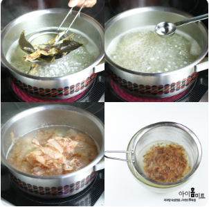
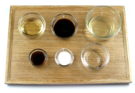
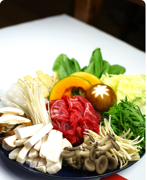
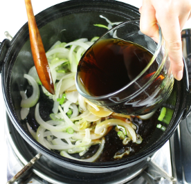
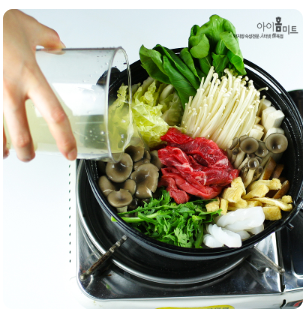
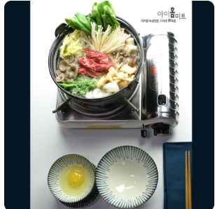

|  | 다시국물을 준비해 준다. 물5C(1000ml) 에 멸치와 다시마를 넣고 물이 끓기 시작하면 다시마를 건져주고 한소끔 끓으면 멸치를 건져준다. 정종1T 넣어주고 살짝 끓인후 불을끄고 가다랑어포를 넣어준후 젓지말고 2분후 체에 걸러준다.(멸치는 키친타올 깔고 전자렌지에 1~2분 정도 돌려주면 비린네 제거에 좋다) |
|---|---|
|  | 소스만들기 -간장 50ml, 미림(맛술)50ml, 다시국물150ml, 정종2T, 참치액1T, 설탕2T 모두 넣고 한소끔 끓여준다. |
|  | 야채를 손질해서 준비해 준다. -양파는 1/2개 체썰어 준다. -대파 1대 어슷썰기해준다. -쑥갓은 5센티정도 썰어준다. -버섯들도 먹기좋게 썰어준다. -배추는 낮장으로 반을 가른후 5센티 정도 길이로 썰어준다. -청경체는 낮장으로 뜯어서 준비해 둔다. -우엉은 채썰어 식초 한두방울 넣은 물에 10분정도 담궈둔다.(아린맛제거위해) -곤약은 1센티 정도 잘라 가운데 칼집넣어서 타래만들듯이 꼬아서 모양을 잡아준다. -유부는 양념이 없는 유부를 선택해서 끓는물에 한번 끓인후 찬물에 행구어 물기를 짜서 준비해 둔다. |
|  | 달군팬에 오일1T넣고 양파, 대파를 향이나게 볶아준후 소스를 자작하게 넣은후 끓여준다. |
|  | 준비한 야채와 고기를 팬에 다 넣은후 다시국물을 70% 정도 넣은후 한소끔 끓인후 간을보고 싱거우면 소스를 더해주어 간을 해준다. |
|  | 개인접시에 계란을 하나 풀어 고기와 모듬야채를 겯들여 찍어 먹는다. -중간중간 고기와 야채를 넣어가면서 먹고 우동면이나 당면을 같이 넣어 먹어도 좋다. |